UX DESIGN CASE STUDY
Unified Payments
Overview
This was my first project as Design Lead at Global Payments, having only joined the company 3 months previously. The genesis of this was an ask from our Product team to design and build a checkout demo to showcase products and capabilities available via our REST API, which are packaged under the title: 'Unified Payments'.
There was already a much older demo in existence called Checkout Hero that offered a very static experience, was pretty dated looking and only showcased one particular product and none of the transaction management capabilities that, for merchants, go hand-in-hand with taking payments.
So they wanted to build a new demo that would showcase all of the Unified Payments capabilities in one demo experience.
DESIGN THINKING
Innovation through Collaboration
As always, my approach to this project was to collaborate with all stakeholders to try and understand the users, to challenge assumptions and to redefine or reframe problems, with the aim of creating an innovative solution that we could then prototype and test with real users.
In the graphic below you can see an overview of the shape that process took for this particular project.
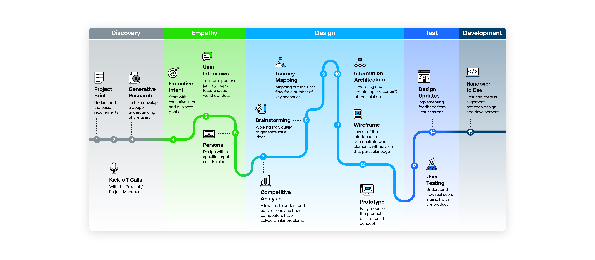
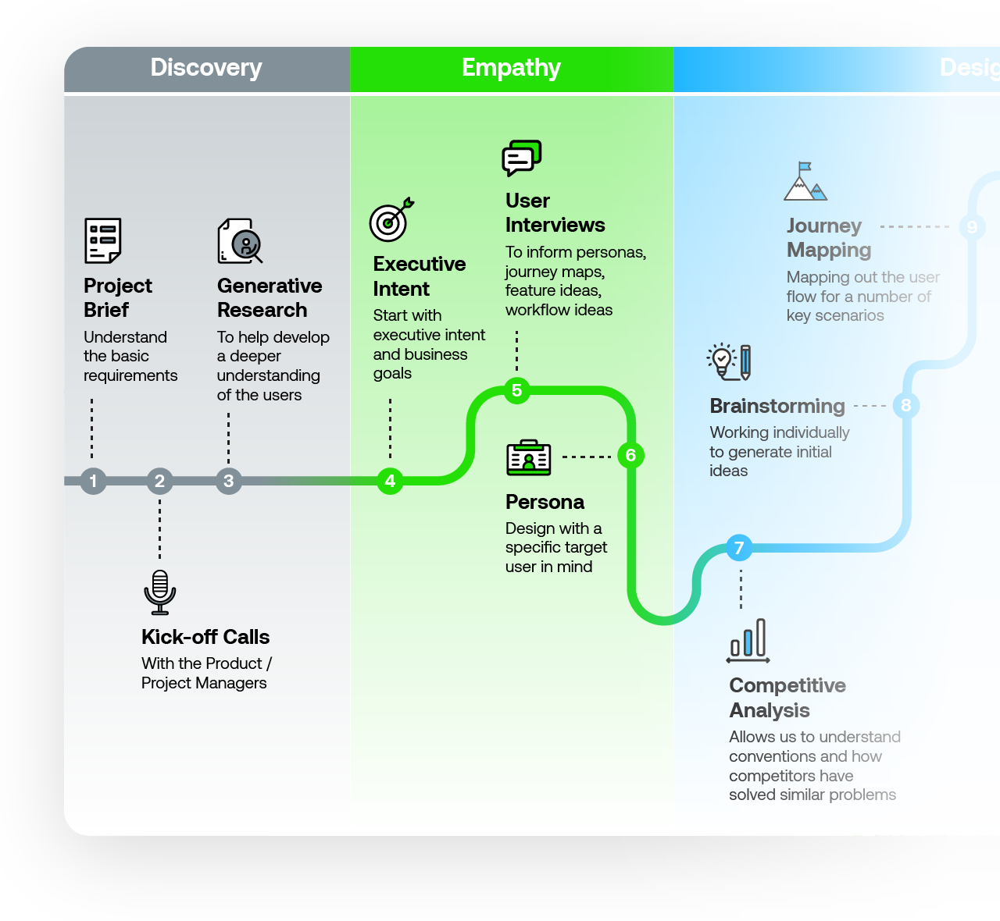
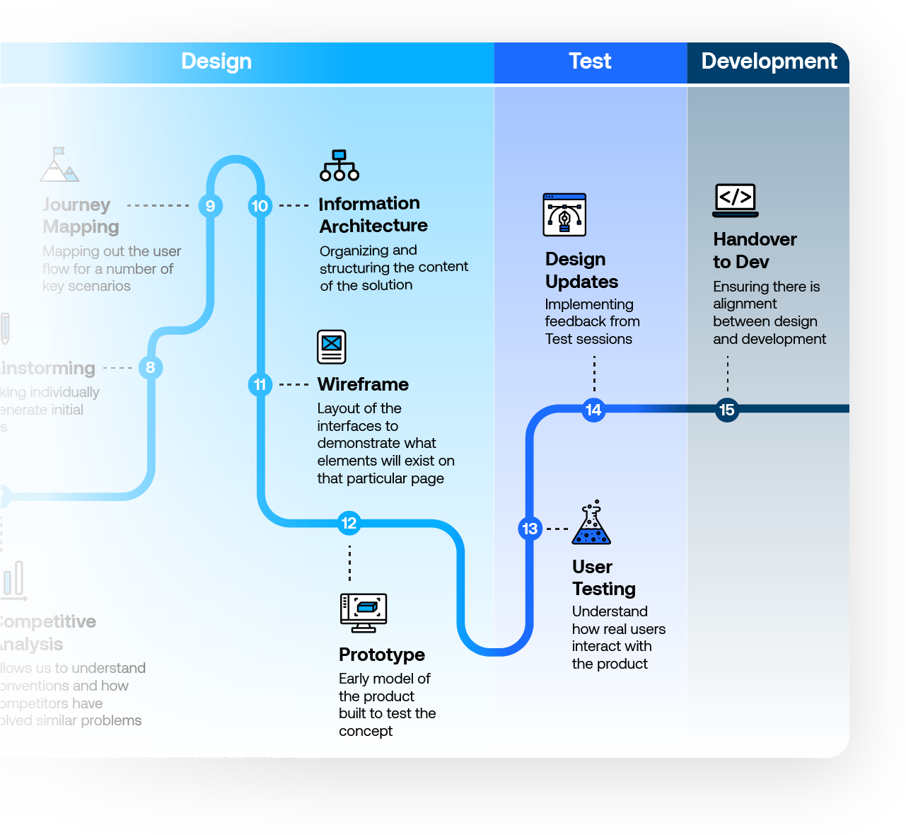
Initial User Research
The first crucial part of this process was the initial User Research. I had some initial questions that I felt we first needed to understand better, such as:
How do our Sales teams currently sell our Drop-in UI and Hosted Fields products?
How much do they know about these solutions or understand them?
Are there any knowledge gaps or limitations?
So our first step was to collaborate with the UX Research team to conduct interviews with Sales Reps and Customer Success Managers to gather insights around these questions. This helped us to start anticipating our users' needs, but also to start questioning the original ask from Product – were we actually talking about designing and building the right solution.
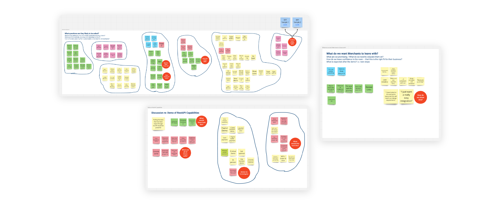
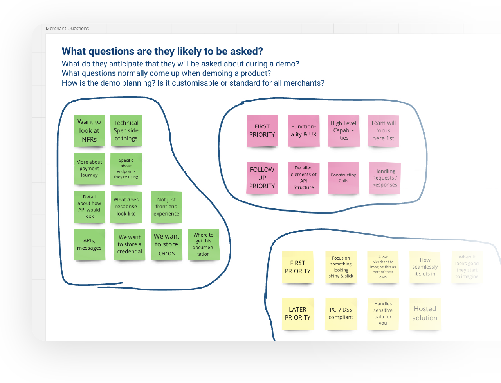
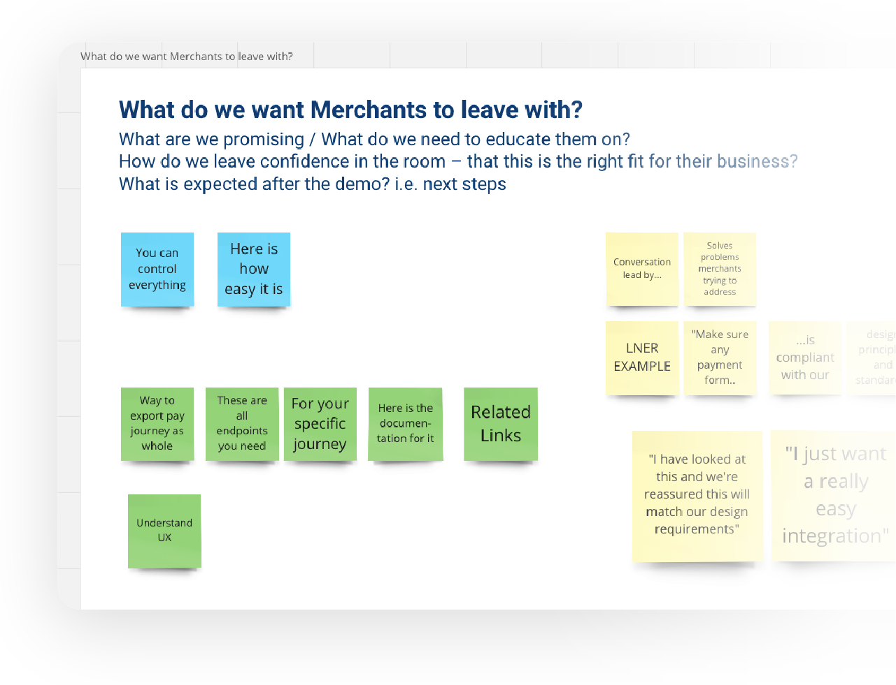
Discovery Sessions
In conjunction with this I also ran Discovery Sessions. These were collaborative discussions with a variety of stakeholders – Design, Product Management, Digital Solutions – that gave us an opportunity to drill down into the problems we were trying to design a solution for and to get clarity on topics such as:
In a Unified Payments demo, what kind of people would Sales be meeting with?
What kind of questions would they likely be asked?
In a demo situation, what do we want merchants to "leave the room" with?
What are we promising them / what do we need to educate them on?
We gathered as many insights as we could and distilled them down into clear outputs that we could share with all stakeholders. By doing this we were able to get a consensus and clarity on the "Why" and Purpose of this demo site before we entered the design phase.
SKETCHING & PROTOTYPING
Ideas Generation & User Testing
And so it was at this point – armed with all these insights – that we could start sketching initial ideas and building basic wireframes which we could use for discussion with stakeholders. This gave us a rough enough idea of the direction of travel that we were headed.
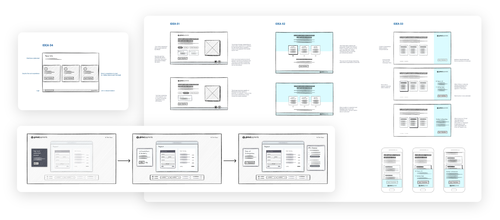
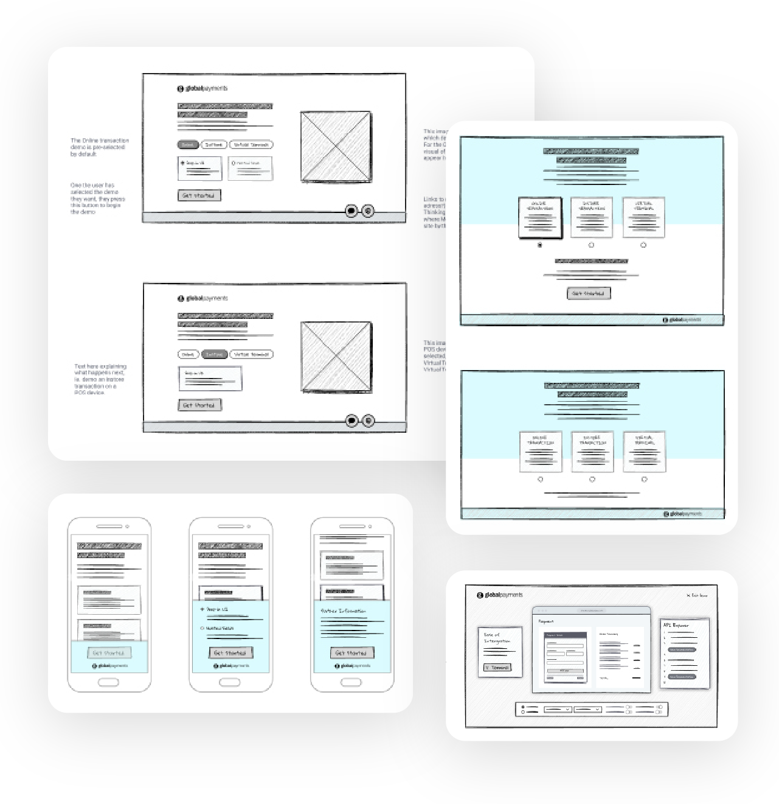
Prototyping & User Testing
Now we were able to start building a prototype. Taking full advantage of our Index Design System, we were able to quickly turn these ideas into a working prototype and start testing it with real users to try and validate some of the design assumptions we had made up to this point.
In particular, what I wanted to understand was:
How well (or not) the demo site empowered users to do what they need to do...
...and...
...how easily (or not) they understood what it was they were supposed to do as they navigated their way around the site.
From this user testing I was able to draw up a list of further experience improvements which we applied to the design before starting the process of working with the Development team to build the real thing.
BETA RELEASE
Launching our MVP
With an MVP built and tested, we were ready to share this internally as a beta release. I felt that the perfect setting for this launch would be at our annual Dublin Offsite in the Aviva Stadium and, with 300 people in attendance, I knew this would be an excellent opportunity to share our excitement about the work.
But instead of just explaining our work, I knew I needed to present a compelling narrative. So I created a product launch video (below), to try and engage people with our passion, and make them feel confident, interested, and optimistic about how this new tool was going to help us all.
The presentation was a success and the response was fantastic!
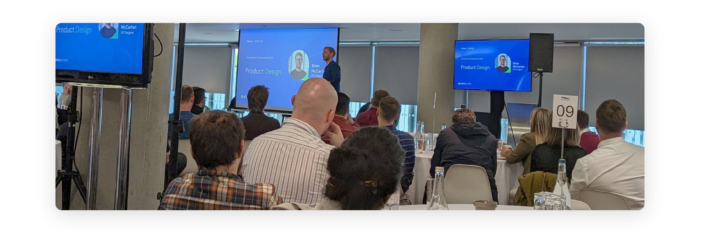
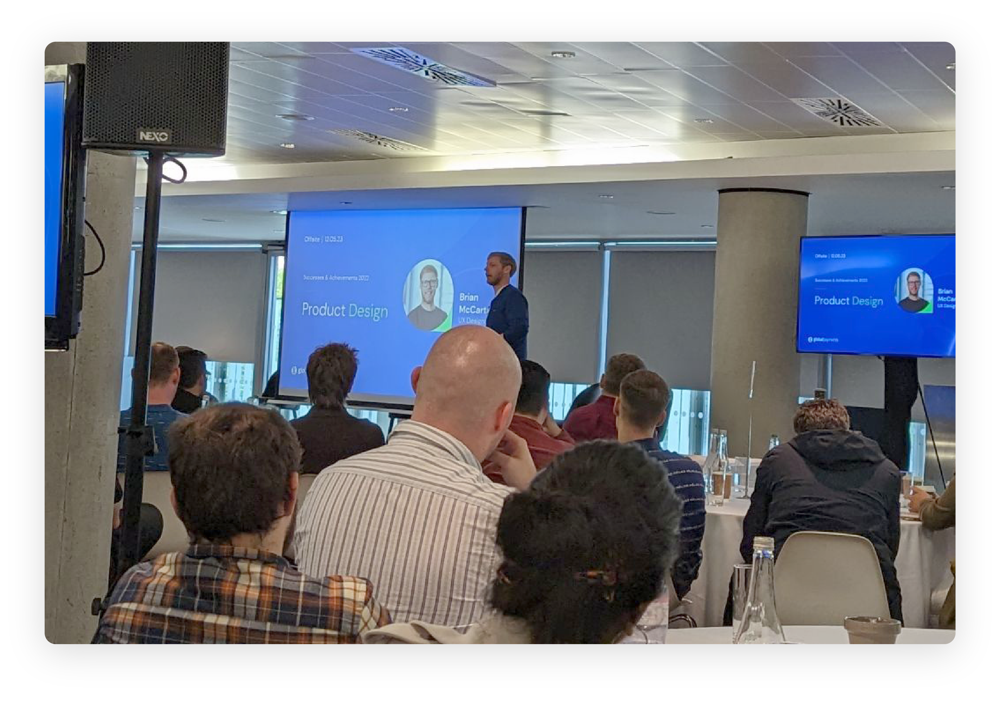
INSIGHTS INTO ACTION
Process-driven innovation
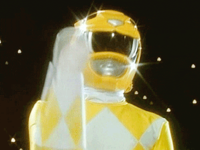
The process we followed on this project was a key part of finding ways to innovate and generate ideas. From that user research we carried out at the start of the project, it immediately became very clear that CSMs and Sales Reps felt there was a lack of support in a number of areas:
In understanding our REST API
In being able to explain things in layman’s terms
In having visibility of product updates
In finding relevant supporting documentation
And so from this I was able to evolve the original ask – from a static checkout experience that we could just let people click around in – to more of a knowledge hub, that offered internal as well as external support in understanding these products and capabilities we offer.
We were able to do this in a number of ways throughout the demo site:
Plain language descriptions on the landing page
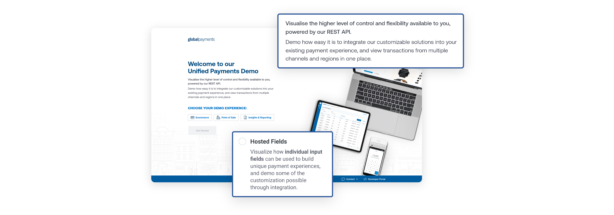
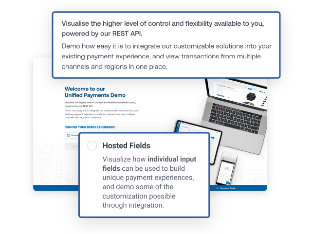
Side panels offering clear instructions
Links throughout the site to further relevant information on our Developer Hub
Useful features, such as the Test Cards drawer, to enrich the demo experience
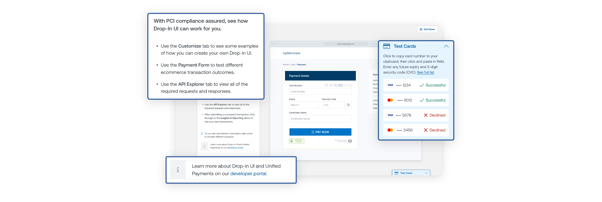
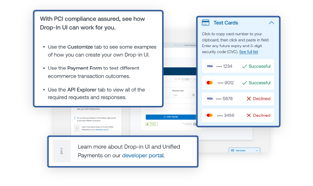
Another crucial part of the process were those early Discovery Sessions. Holding these workshops provided the opportunity to collaborate with stakeholders and bring clarity and consensus on the “why” of the demo site, before we even started designing the solution.
And they also generated lots of new ideas, such as:
Custom Journey Builder
Users can build custom payment journeys by adding Value Adds on top of the default journey and then they can demo what that specific payment flow would look like.


Vertical Specific Messaging
Designed into the checkout interfaces are messaging that highlight how certain value adds can be of particular benefit to specific target markets.


API Explorer
We identified that, on calls with merchants and their technical stakeholders, Sale Reps struggled to field questions around integration. And so we added an API Explorer. This allows users to see, in real-time, the calls and responses required to integrate these solutions into a merchant's own checkout.


DESIGN OPERATIONS
Encapsulating Design Principles
Looking back on this project, one thing I am quite proud of is the way the work encapsulated some of our Design Principles at Global Payments. [And for which I designed the visual language].
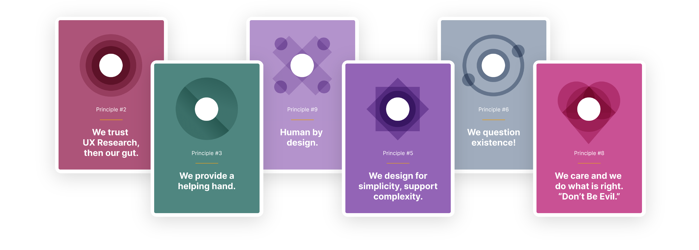
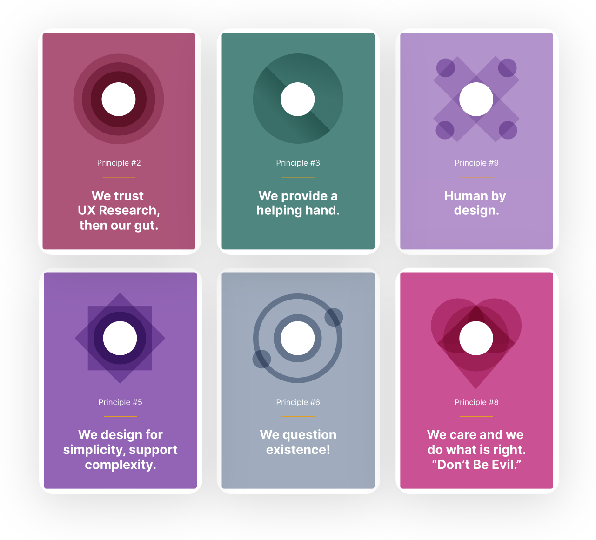
I trusted the UX Research first, and wanted to design something that didn't just do "a job", but would provide a helping hand in a realistic and practical way, and was human by design.
And as we dug more into all the problems that needed to be solved and the project became more complex, I feel we still designed for simplicity.
I also had to question existence at times, and question the original ask and requirements – because ultimately we cared and we wanted to do what was right.
THE FUTURE
This is only the beginning

Just to wrap up, this is only really the beginning. Because of the process and the collaboration with stakeholders from the outset, we already have a vision for how to grow the demo site. New value adds, new payment methods, new reporting actions – constantly evolving the demo whilst always working (from a user experience perspective) to maintain the integrity and success of the demo we’ve created.
I am already beginning work on other demo sites. And these demos should really be linked and work in conjunction with the Unified Payments Demo, as should any other demo we create in future to showcase capabilities available through the API.
So I see a future state where we potentially have a master demo environment, and within it are lots of different product demos, and these would all be intertwined and linked and working together.
A month or two before the launch of our MVP for the Unified Payments demo, I was discussing this idea with one of my colleagues and he came up with a great title for this idea, which was...

So here's to the Demo-verse! The future is very exciting.